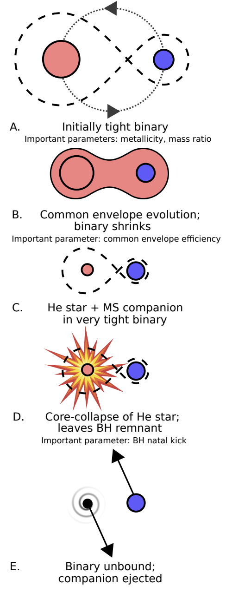
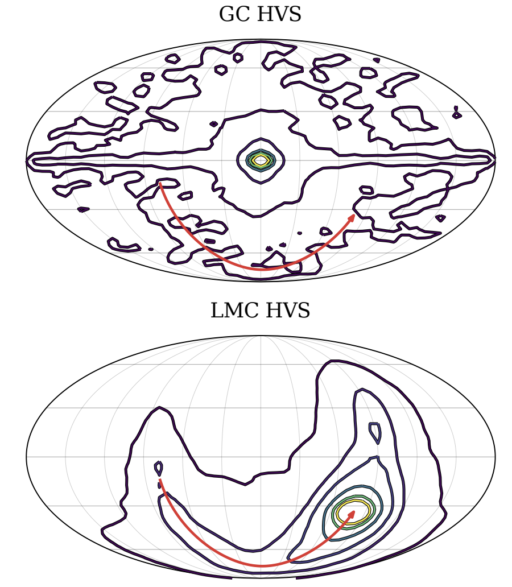
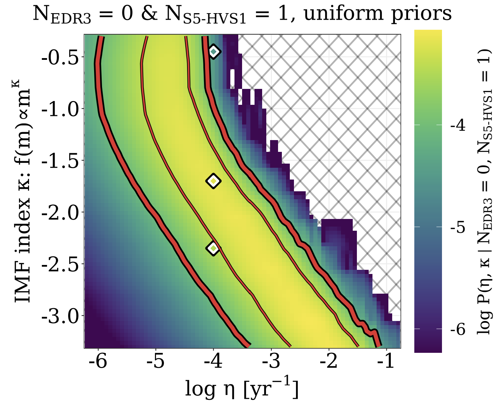
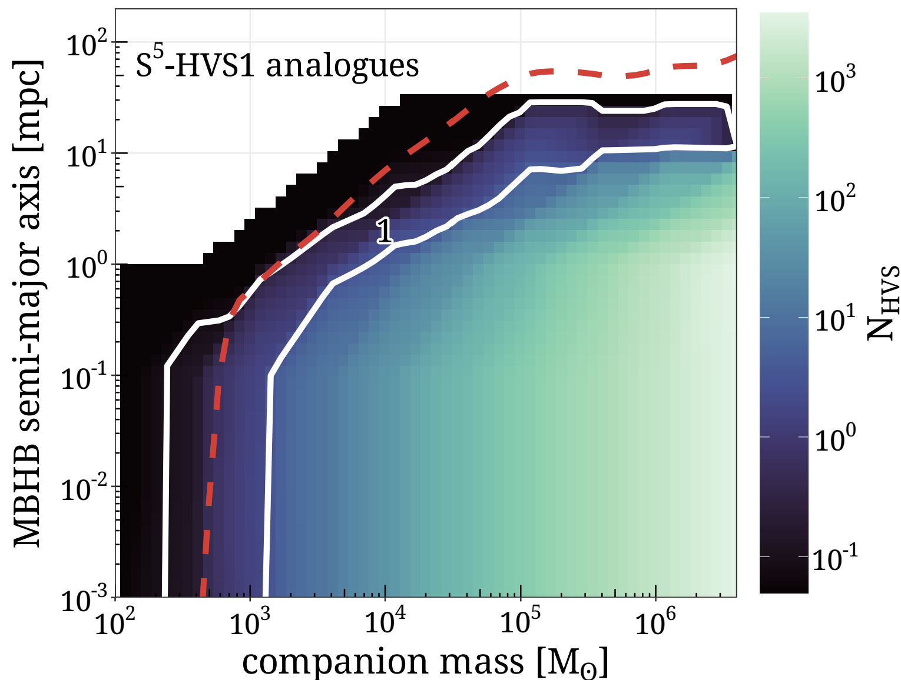
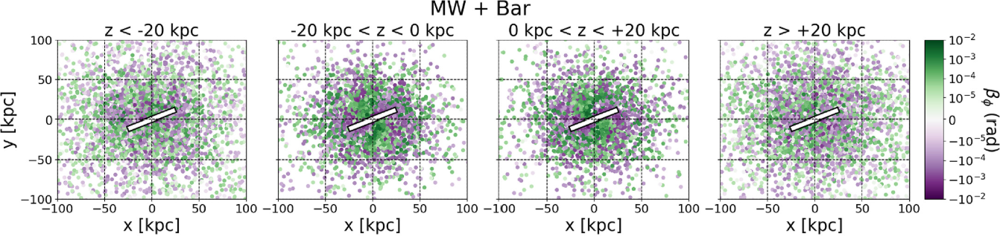
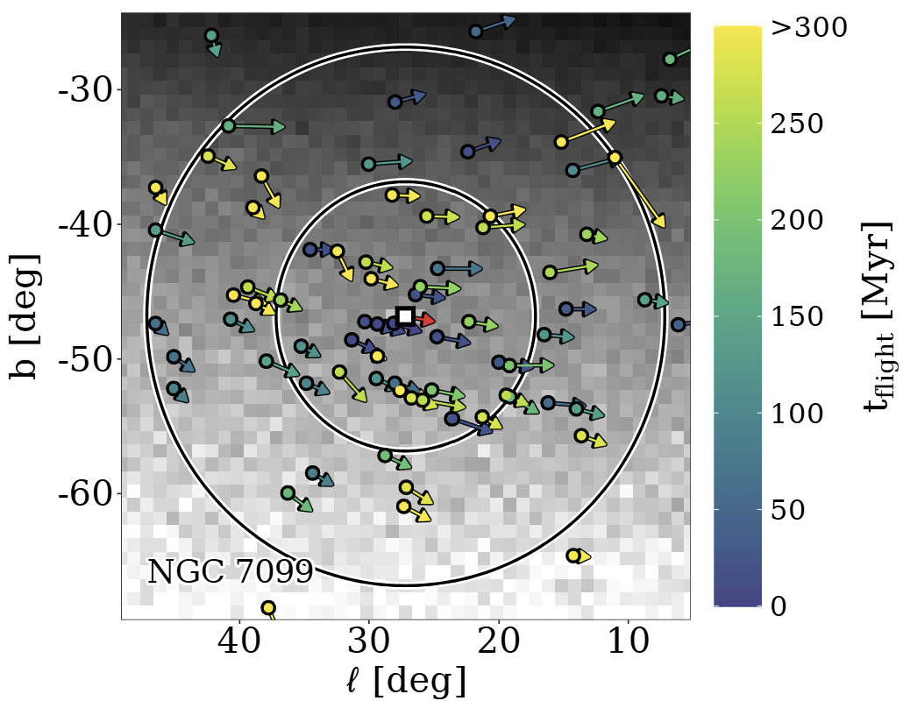

Here are some highlight plots from some of my papers throughout my PhD and postdoctoral work. My research mostly involves rare stars in our Galaxy called hypervelocity stars. While most stars in the Milky Way including our own Sun travel at ~100-300 km/s, some stars have been detected travelling at 1000 km/s or even faster! These hypervelocity stars (HVSs) are moving so fast that not even the gravitational pull of the Milky Way is strong enough to contain them. Eventually, they will escape the Galaxy entirely and fly off into intergalactic space. Accelerating stars to such extreme velocities is no easy feat -- it typically involves violent scenarios such as close encounters with supermassive black holes or the deaths of massive stars in supernova explosions.
The cover of my PhD dissertation, designed by my talented sister. PhD dissertations in the Netherlands are by tradition physically printed with original cover artwork.

From Evans et al. (2020). Here I show a schematic for a situation in which a hypervelocity star can plausibly be ejected following a supernova explosion, according to our simulations. In step A, we have a tight stellar binary (two stars in close orbit around each other) consisting of a massive star and a less-massive companion. In step B, as the more massive star evolves, it expands to such a degree that its outermost envelope actually engulfs its companion. While orbiting through this envelope, friction causes the companion star to spiral in closer, such that in step C when the envelope dissipates, we are left with a helium star (the small, dense helium core of the more massive star) and the companion orbiting each other very quickly in an extremely tight orbit. In step D, at the end of its life the more massive star dies in a supernova explosion and becomes a black hole. The force of this explosion is strong enough to separate the binary entirely, and in step E the companion star is ejected at up to 1000 km/s. A specific scenario like this is rare and contrived -- this paper showed conclusively that this scenario does not contribute significantly to the known population of hypervelocity stars in the Galaxy.

From Evans et al. (2021). In this work we compared the populations of hypervelocity stars ejected from interactions with the supermassive black hole at the centre of our own Milky Way galaxy to those ejected from the supermassive black hole at the centre of the Large Magellanic Cloud (LMC), the Milky Way's largest dwarf galaxy companion. The figure shows the distribution on the sky of stars ejected from the Milky Way (top) and LMC (bottom) in a Mollweide projection of Galactic coordinates (i.e. zero-latitude lies along the plane of the Galaxy). The contours show where the HVSs in each population reside on the sky. The red curve shows how the position of the LMC has changed over the last 500 million years. This work showed that the LMC was an under-appreciated potential source of hypervelocity stars -- its population of ejected hypervelocity stars could be similar to, or even outnumber, that of the Milky Way itself.

From Evans et al. (2022). In this work we explored what the then-known HVSs ejected from the Galactic Centre could tell us about the conditions of the Galactic Centre itself. We showed in this figure how the HVS populations can constrain the ejection rate of HVSs (x axis) and the slope of the stellar initial mass function (more plainly, how many massive stars there are relative to less-massive stars). A Bayesian inference approach using the available data constrained these parameters to within the thin red lines at 1-sigma confidence, or within the thick red lines at 2-sigma confidence. This significantly improved upon prior constraints.

From Evans et al. (2023). In this work we explored what the then-known HVSs ejected from the Galactic Centre could tell us about whether or not the supermassive black hole at the centre of the Galaxy has a black hole companion orbiting it. Depending on the assumed mass of this black hole companion (x axis) and its separation from the supermassive black hole (y axis), the colour bar shows the number of HVSs we would expect similar to S5-HVS1, a well-known hypervelocity star. The region between the white bands is where we would expect this number to be exactly one. The region of parameter space underneath the red dashed line had already been ruled out earlier in the work because it would eject too many hypervelocity stars.

From Armstrong, Evans & Bovy (2025). In this work, we explored how the trajectories of hypervelocity stars are deflected as they travel from the centre of the Milky Way. The plot shows a face-on view of the Milky Way (think of looking at a frisbee face-on). Each point represents a hypervelocity star and is coloured by how much its flight path has been deflected due to the Galactic bar, a dense linear structure of stars in the inner Galaxy, shown here using the white rectangle (not to scale). Results are shown in the panels from left to right for stars found today far below, slightly below, slightly above, and far above the Galactic disc. This work showed that hypervelocity stars are deflected more than previously expected, particularly for stars ejected along or perpendicular to the bar.

From Evans et al. (submitted). In this work, we explored globular clusters in the Milky Way, which are dense clusters of old stars typically found on the outskits of the Galaxy. We studied whether stars in these clusters could slingshot around black hole binaries and escape the cluster. Here we show our predictions for stars ejected from NGC 7099, a well-known dense globular cluster. The cluster itself is shown in the centre of the image and the coloured points where stars ejected from it end up on the sky in Galactic longitude (x axis) and latitude (y axis), coloured by how long ago they were ejected. The arrows on each star show the direction on the sky they are moving today. The inner/outer black rings denote a separation of 10/20 degrees from NGC 7099. In greyscale in the background we show how crowded the Milky Way is in this region of the sky as seen by the Gaia space telescope -- in the lightest pixels there are 1,000 stars per square degree, and in the darkest there are 30,000 stars per square degree.